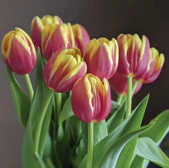

Inicio
Nosotros
Productos
Cuidado de flores
Cuidado de flores
Rosas
Coloca las rosas en un florero limpio con agua tibia.
Corta los tallos en diagonal para aumentar la absorción de agua.
Retira las hojas inferiores que estarán sumergidas en el agua.
Agrega nutrientes para flores cortadas al agua para prolongar su vida útil.
Cambia el agua cada dos días, especialmente en climas cálidos.
Mantén las rosas en un lugar fresco y alejado de la luz directa del sol.
Rocía agua en los pétalos para mantenerlos hidratados.
Si el clima es especialmente caluroso, considera mantener las rosas en un lugar fresco durante las horas más calurosas del día.
Lirios
Llena un florero con agua fresca y coloca los lirios en él.
Corta los tallos en ángulo para mejorar la absorción de agua.
Retira las hojas inferiores que estarán sumergidas en el agua.
Evita exponer los lirios a corrientes de aire o fuentes de calor directas.
Mantén los lirios alejados de las frutas, ya que pueden acelerar su maduración y acortar su vida útil.
En climas cálidos, coloca el florero en un lugar fresco y evita la luz solar directa intensa.
Reemplaza el agua cada dos días y limpia el florero regularmente para evitar el crecimiento de bacterias.

Tulipanes
Coloca los tulipanes en un florero limpio con agua fresca.
Corta los tallos en diagonal para una mejor absorción de agua.
Retira las hojas inferiores que estarán sumergidas en el agua.
Mantén los tulipanes en un lugar fresco y lejos de la luz solar directa.
Evita la exposición a corrientes de aire fuertes y fuentes de calor.
En climas cálidos, coloca los tulipanes en un lugar fresco o en el refrigerador durante las horas más calurosas del día.
Cambia el agua cada dos días y recorta los tallos si es necesario.
Girasoles
Coloca los girasoles en un florero con agua fresca.
Asegúrate de que el florero sea lo suficientemente alto para soportar los tallos largos.
Corta los tallos en diagonal para una mejor absorción de agua.
Retira las hojas inferiores que estarán sumergidas en el agua.
Coloca los girasoles en un lugar soleado para que puedan recibir al menos 6 horas de luz solar directa al día.
En climas cálidos, evita la exposición directa a la luz solar intensa durante las horas más calurosas del día.
Cambia el agua del florero cada dos días y límpialo para evitar el crecimiento de bacterias.
Recorta los tallos si es necesario para mantenerlos frescos.